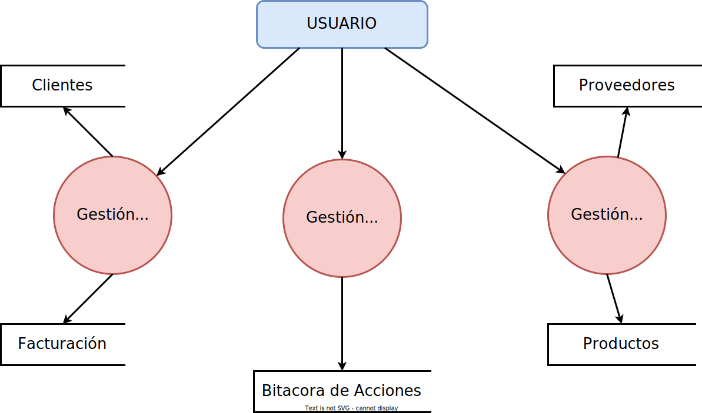

Ejemplo de Diagrama de Nivel de Contexto o Nivel 0 para un sistema de inventario y facturación

Ejemplo de Diagrama de Nivel 1 para un sistema de inventario y facturación

Ejemplo de Diagrama de Nivel N (Nivel 2) para un sistema de inventario y facturación